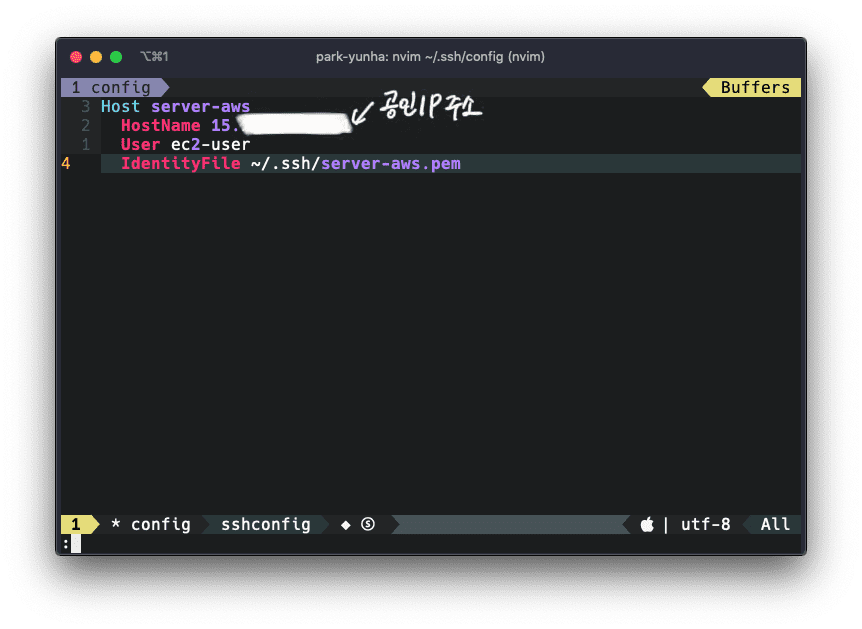

원격 서버에 접속하는 방법: SSH
SSH 설정(config)를 적용해서 EC2 인스턴스 접속을 한번에 편하게 하자.

SSH는 언제 사용을 할까? #
AWS나 GCP와 같은 클라우드 서비스를 이용한다면 아마 대부분 서버 인스턴스를 사용하고 있을 것이다. 그리고 그 서버에 서비스가 구동중이거나 구동할 예정이라면 개발자는 꽤 자주 원격으로 서버에 접속해야할 것이다. 보통 클라우드 벤더들은 웹 환경에서 쉘을 접속할 수 있도록 하거나 구글 같은 경우 Cloud SDK를 설치하면 자신들이 만든 명령어로 접속할수 있다. 하지만 일반 서버에 접속하거나 AWS를 이용한다면 대부분 SSH를 이용해야 한다.
Key Term: SSH는 멀리 떨어진 다른 컴퓨터에 접속하여 명령을 실행할수 있도록 해주는 응용 프로그램 또는 그 프로토콜을 말한다.
대부분의 사용자가 윈도우 환경 혹은 맥 환경에서 컴퓨터를 사용하기 때문에 이 두 OS에서 대표적인 클라우드 서비스인 AWS의 EC2서버에 원격접속하는 방법에 대해 알아보자.
Contents #
- SSH 접속하기
- macOS에서 SSH config 설정하기
- Windows 10에서 SSH config 설정하기
SSH 접속하기 #
- SSH 클라이언트를 연다.(윈도우의 경우는 Cmd 혹은 Git bash, 맥의 경우는 터미널)
- 프라이빗 키 파일(
server.aws.pem)을 찾는다. - SSH를 사용하기 위해 키 파일의 권한을 변경해준다.
chmod 400 server-aws.pem - 퍼블릭 DNS 또는 IP를 사용하여 인스턴스에 연결한다.

Caution: 원격 서버에 접속하기 위해서는 서버에서 접속하는 클라이언트에 대해 접근이 허가되어야 한다. 예를 들어 아마존의 EC2 인스턴스의 경우 보안 그룹을 구성하여 인스턴스에 대한 트래픽을 제어할 수 있다. 따라서 외부에서 접속하기 위해 특정 IP 대역에 대해 SSH 접근을 허용해줘야 한다.
macOS #
맥의 경우 잘 알려져 있다시피 운영체제가 유닉스 기반으로 만들어졌다. 그러다보니 개발에 필요한 여러 툴들이 기본적으로 설치되어 있기도 하고 설치가 매우 간편하다. SSH는 기본적으로 설치되어 있으므로 바로 SSH 설정파일을 작성하도록 하자.
SSH 설정파일 만들기 #
맥 환경에서는 기본적으로 SSH가 설치 되어 있기 때문에 아래와 같이 설정을 진행하면 된다.
홈 디렉토리로 이동 #
cd ~
.ssh 디렉토리에 config 파일 생성 #
vim ~/.ssh/config
접속할 호스트 정보 입력 #
AWS EC2를 접속할 때는 비밀번호를 이용하는 것과 키 파일을 이용하는 2가지 방법이 있다.
- 비밀번호를 이용한 접속 방법
Host 호스트명
HostName 호스트IP
User 호스트사용자명- 키 파일(pem)을 이용한 접속 방법
IdentityFile 항목을 추가해서 키 파일(pem) 위치를 입력해준다.
Host 호스트명
HostName 호스트IP
User 호스트사용자명
IdentityFile pem키위치
위의 캡쳐와 같이 설정하면 이제부터는 config에 설정해둔 호스트 명칭(ssh server-aws.pem)을 입력하는 것만으로도 쉽게 서버에 접속할 수 있다.
Windows 10 #
윈도우 7 이전의 경우 운영체제에서 기본적으로 SSH 접속을 지원하지 않기 때문에 putty와 같은 툴을 사용하여 접속하는 경우가 많았다. 하지만 윈도우 7 지원이 2020년 1월 14일자로 종료되기 때문에 윈도우 10 기준으로 진행하도록 하겠다.
윈도우 10도 맥과 마찬가지로 SSH가 기본적으로 설치 되어 있기 때문에 SSH 설정파일을 바로 작성해주면 된다. 위에서 언급한 것처럼 기본적으로 제공되는 Cmd나 PowerShell을 사용해도 되고 Git bash를 설치하여 활용해도 된다. 개발을 위해서는 서버와 비슷한 환경을 사용할 수 있는 Git bash를 사용하는 것을 추천한다. 명령어 뿐만 아니라 테마 설정 등 개발자 편의를 누릴 수 있는 기능들을 제공하기 때문이다.
SSH 설정파일 만들기 #
Caution:
접속 시도 중 no matching key 에러가 발생한다면 이는 openSSH에서 몇몇 옵션이 enable 되어있지 않기 때문입니다. 윈도우에서 ssh 터미널 사용하기에 따르면 아래와 같이 설정을 추가해주면 된다고 한다.
Host *
KexAlgorithms +diffie-hellman-group1-sha1
HostKeyAlgorithms +ssh-dss
Ciphers +3des-cbc
Macs +hmac-md5
UserKnownHostsFile ~/.ssh/known_hosts아래는 최종 config 설정 파일이다.
결론 #
이상으로 맥와 윈도우에서 SSH 접속을 통해 원격 서버에 접속하는 방법에 대해 알아보았다. 요즘에는 개인 프로젝트도 대부분 클라우스 서비스를 활용하여 서버를 올리고 배포하는 경우가 많기 때문에 간단한 설정으로 개발의 편리성을 올릴 수 있는 방법이 유용할 것이라 생각한다. 내용에 대해 수정이 필요하거나 추가하고 싶은 내용이 있다면 아래 링크를 통해 깃헙 이슈를 남겨주면 반영하도록 하겠다.